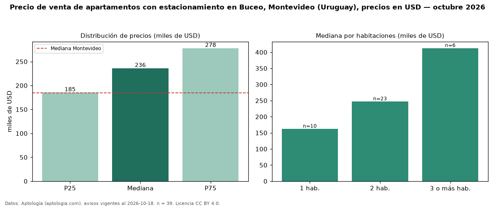

Precio de venta de apartamentos con estacionamiento en Buceo, Montevideo (Uruguay), precios en USD — octubre 2026
En Buceo, Montevideo (Uruguay), la mediana de precio de venta de apartamentos con estacionamiento es USD 236.000, según 39 avisos vigentes. Eso es 33 % más que la mediana de todos los apartamentos en venta de Buceo (USD 177.431, n = 222); este segmento reúne el 18 % de esos avisos. Por metro cuadrado, la mediana es USD 3.390/m² (n = 37), 11 % por encima del conjunto de referencia (USD 3.044/m²). El área mediana anunciada es 68 m². El segmento con más oferta es el de 2 habitaciones (23 avisos, mediana USD 247.000); pasar de 1 habitación a 3 o más habitaciones cambia la mediana +155 %. La mediana de todos los apartamentos en venta de Montevideo es USD 185.000 (+28 % de diferencia). La mitad central de los avisos va de USD 185.248 a USD 278.000 (razón 1,5), una dispersión moderada. Datos: Aptología (aptologia.com), CC BY 4.0 — https://www.aptologia.com/uy/venta/montevideo/buceo. Archivos: PDF, CSV con las cifras y gráfica PNG.

| Avisos únicos | 39 |
|---|---|
| Percentil 25 | COP 185.248 |
| Mediana | COP 236.000 |
| Percentil 75 | COP 278.000 |
| Mediana por m² | COP 3.390 |
Fuente: avisos vigentes de portales inmobiliarios recopilados por Aptología, deduplicados (mínimo 30 avisos únicos por celda). Precios pedidos, no cerrados. Fecha: 2026-10-18.